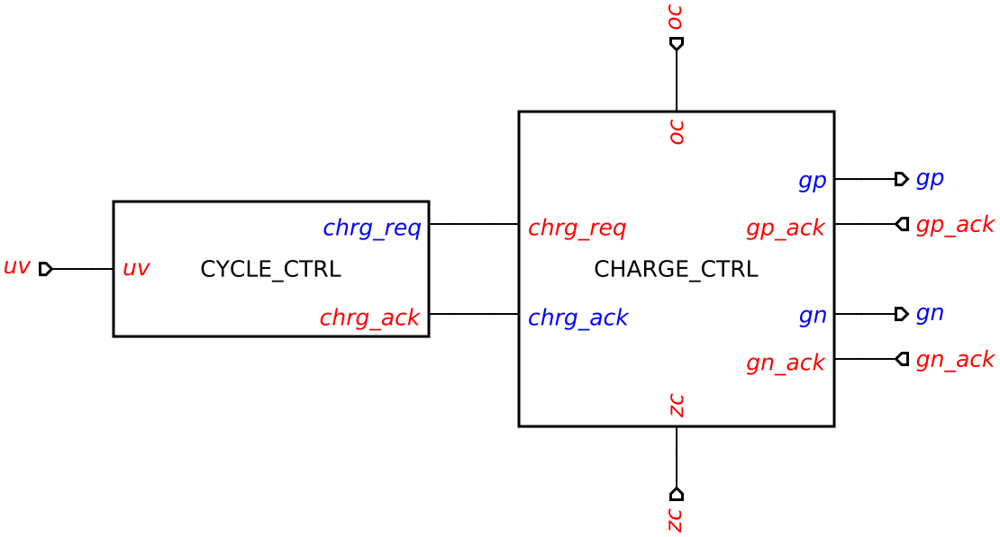
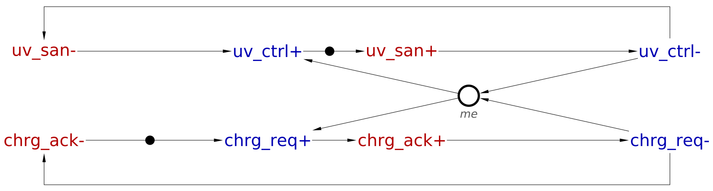
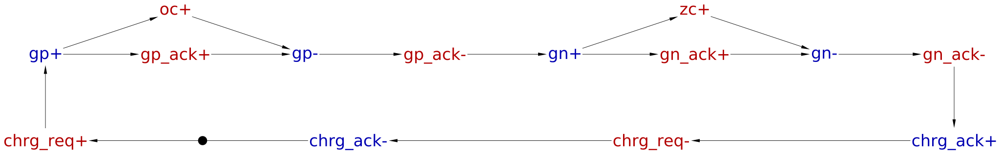
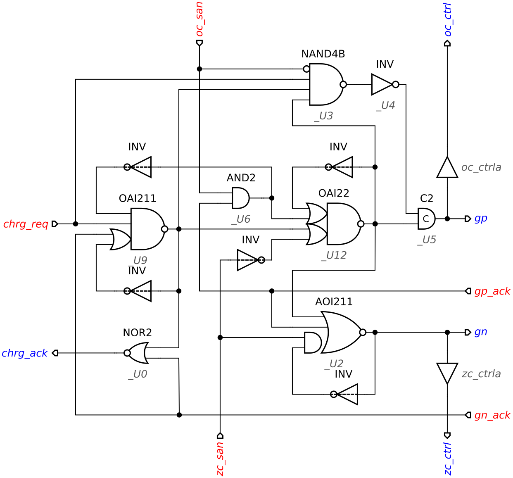

Table of Contents
Hierarchical design of a realistic buck controller
In this tutorial we revisit the basic buck converter and design its controller with a more realistic interpretation of the UV, OC and ZC conditions.
A common mistake of novice designers is to attempt creating a single monolithic STG capturing the behaviour of the whole circuit. This is infeasible for all but tiny circuits with a handful of signals. The main learning objective of this tutorial is the use of hierarchical decomposition of the system into modules of manageable size, so that:
- the overall controller can be specified as several small STGs rather than a big monolithic one which is very challenging for the human designer to create and comprehend;
- circuit synthesis tools have to deal with smaller STGs, which reduces the risk of memory overflow or timeout due to state space explosion, as well as the risk of logic decomposition failure due to large complex-gates which cannot be decomposed into library gates in a speed-independent way.
Informal specification
The system comprises an analog buck and its digital control logic as shown in the following diagram.

The controller switches the power regulating PMOS and NMOS transistors ON and OFF by means of gp and gn outputs, as a reaction to uv (under-voltage), oc (over-current) and zc (zero-crossing) inputs. These inputs are produced in the analog part by comparators of measured current and voltage levels against reference values (V_ref, I_max and I_0 respectively). These signals may be non-persistent, and so have to be sanitised before letting them into the digital controller.
To prevent a short circuit, PMOS and NMOS must not be ON at the same time. This should be guaranteed by observing the gp_ack and gn_ack signals, which indicate when the power transistor threshold levels (V_pmos and V_nmos) are crossed.
The expected behaviour of a buck can be informally specified as follows:
- While
uvis low – wait in tri-state (i.e. both PMOS and NMOS power regulating transistors are OFF). - While
uvis high – keep performing cycles of charging:- A cycle of charging starts at tri-state; both
ocandzcare low. - Switch PMOS transistor ON and wait for
octo rise. - When
ocis high, switch PMOS transistor OFF. - When PMOS is OFF, switch NMOS transistor ON and wait for
zcto rise. - When
zcis high, switch NMOS transistor OFF and enter tri-state.
Decomposition of controller
One can notice two distinctive tasks for the controller: selecting the mode of operation (waiting or charging) as a reaction to uv and performing a cycle of charging. This observation helps to decompose the controller into two modules, CYCLE_CTRL and CHARGE_CTRL, communicating by a handshake:

CYCLE_CTRL is the master deciding whether to perform a charging cycle and delegating this job to slave CHARGE_CTRL.
Note that signals uv, oc, and zc are produced by the analogue part of the buck and thus may be non-persistent. In order to prevent unexpected changes, they have to be sanitised using special analog-to-asynchronous (A2A) components:

For oc and zc we are only interested in catching their rising edges, therefore a basic WAIT element is used:
WAIT element works as follows:
- Upon activation by
ctrl+it waits for (non-persistent)sig=1(may miss short spikes) and latches it as ‘clean’san; - ‘Clean’
ctrl/sanhandshake controlled by ‘dirty’sig.
For uv, however, both rising and falling edges are meaningful. Therefore we use a WAIT2 element:
WAIT2 element is similar to WAIT but works with both phases of its (non-persistent) input sig:
- after
ctrl+it waits forsig=1(may miss short spikes) and latches it as stablesan=1; - after
ctrl-it waits forsig=0(may miss short spikes) and latches it as stablesan=0.
Design of controller modules
CYCLE module
CYCLE should capture the following behaviour:
- initially
uv_sanis low and controller waits for it to get high; - when
uv_sangets high the controller repeatedly initiates handshakeschrg_req/chrg_ackon its interface toCHARGE, thus instructing it to perform charging cycles of the buck; - when
uv_sangets low,CYCLEstops initiating handshakes untiluv_sangoes high again.
Note that there is a race between uv_san going low and the decision to start another cycle of charging. When these happen close in time, there is a choice whether to squeeze in another cycle of charging or not. This behaviour is captured by the following STG where this choice is represented using place me (for mutual exclusion).

It is always a good idea to formally verify STG models using Verification menu. The above STG is consistent, deadlock-free, and input-proper. However, the output persistency property is violated. Indeed, outputs uv_ctrl+ and chrg_req+ disable each other. In fact, the choice at place me is an arbitrating choice and has to be implemented using a special component called MUTEX that can correctly handle the metastable behaviour associated with arbitration.
The protocol and circuit notation for MUTEX are as follows.
 |
| MUTEX specification |
 |
| MUTEX component |
By tagging the choice place as a Mutex in the Property editor, the designer can prompt Workcraft to implement the associated choice by a MUTEX. Note that the surrounding signals must follow the MUTEX protocol – this can be verified via Verification→Mutex place implementability [MPSat].
Tag place me as a Mutex in the CYCLE STG and verify whether the surrounding signals follow the MUTEX protocol. In this case the property is violated: uv_ctrl+ and chrg_req+ (to be implemented by mutex grants) are triggered by uv_san- and chrg_ack-, respectively, i.e. the phases of the signals do not match those in the MUTEX protocol. Hence we introduce a pair of internal signals which explicitly implement MUTEX requests with the correct polarity, which satisfies this property:

CYCLE_CTRL module can be simplified by replacing WAIT2 with WAIT and altering the logic of its operation. However, this is left as a take-home exercise – this tutorial focuses on modular design, and this change would make CYCLE_CTRL too simple to justify a separate module.

CHARGE module
CHARGE should capture the following behaviour:
- Initially the buck is in the tri-state, i.e. both PMOS and NMOS power regulating transistors are OFF.
- Upon receiving a request from
CYCLE, the PMOS transistor is switched ON and remains ON until OC condition. - After that the PMOS is switched OFF, and then NMOS is switched ON and remains ON until ZC condition.
- Finally NMOS is switched OFF returning the buck to tri-state, and the handshake with
CYCLEis completed.
The idea of the approach below is to start with a small yet meaningful STG capturing the core behaviour but is not necessarily synthesisable. Then we augment and refine it into a synthesisable STG using standard transformations. This way the initial specification is comprehensible for the human designer, and the subsequent design steps can be documented and easily checked.
Step 1: Initial design
The following STG captures the core behaviour of CHARGE. Note that there are several problems with it:
- The interface to the two
WAITelements is not modelled yet, and non-sanitized signalsocandzcare used instead. - The falling edges
oc-andzc-are missing, and so the STG is not consistent.

Step 2: Inserting the falling edges
As signals oc and zc will eventually be sanitized with the help of WAIT elements, the designer will ultimately have control of when to start waiting for them and when to reset the WAIT elements after the rising phases of these signals have been registered. The precise positions of the falling edges of these signals do not matter from the correctness point of view (as long as the consistency property is satisfied and no inputs are delayed), but it makes sense to remove them from critical paths and try to optimise the size of the circuit.
It is possible to insert such reset transitions automatically, with the view to satisfy the consistency property and heuristically optimise the quality of the resulting circuit. This functionality is not currently implemented in Workcraft, but accessible by running Petrify from the command line. Hopefully one day it will be available from Workcraft GUI…
The STG below shows one possible way of inserting oc- and zc-. Note that this exercise is not about circuit optimisation; in practice, one would try to use the flexibility in inserting these signals to simplify the resulting circuit.

Step 3: Sanitizing analogue inputs
Signals oc and zc are generated by the analogue part of the buck and thus there is no guarantee that they are persistent. Hence they have to be sanitised with the help of WAIT elements before letting them into the digital controller. This is actually a simple transformation: One can view the transitions of these signals as 'collapsed' handshakes with WAIT elements. Expanding them into proper handshakes can be done by selecting transitions oc+, oc-, zc+, zc-, and using Transformations→Expand selected handshake transitions… menu. Note that default suffixes for handshake expansion are _req and _ack, but these can be changed by the designer, e.g. to _ctrl and _san in this case. (Alternatively one can expand handshakes by right-clicking a transition and choosing Expand handshake transition… in the popup menu.) The resulting STG is as follows:

Verification of STG specifications
As usual, before proceeding to the synthesis step, one should validate the STG by simulation and formally verify the standard correctness properties (consistency, deadlock freeness, input properness, output persistency, mutex implementability) using Verification menu.
For CYCLE we also need to verify the implementability of the choice place me by a MUTEX using Verification→Mutex place implementability [MPSat] menu. Moreover, pairs of signals uv_ctrl / uv_san and chrg_req / chrg_ack are expected to form active handshakes, which must be verified as described in the Handshakes Verification tutorial.
For CHARGE module we also need to verify the custom property that the power regulating PMOS and NMOS transistors are never ON at the same time, as explained in the basic buck tutorial. Moreover, pairs of signals oc_ctrl / oc_san, zc_ctrl / zc_san, gp / gp_ack and gn / gn_ack are expected to form active handshakes, and chrg_req / chrg_ack a passive handshake, which must be verified as described in the Handshakes Verification tutorial.
When decomposing a system into smaller modules, there is a new type of problem: One module might produce an output unexpected by another module at that moment. For example, CYCLE could potentially fire chrg_req+ output transition at a moment when CHARGE is not in a state that enables its chrg_req+ input transition. Similarly, CHARGE could potentially fire its chrg_ack+ output at a moment when CYCLE is not enabling its chrg_ack+ input. Hence, one should verify that the modules conform to each other using the Verification→N-way conformation [MPSat]… menu. In general, there can be more than two modules interacting in complicated ways, and this check should include them all – see the Verification and synthesis of hierarchical designs tutorial for more detail.
Circuit synthesis and verification
Synthesise the STGs for the CYCLE and CHARGE modules using either Technology mapping [Petrify] or Technology mapping [MPSat] command in the Synthesis menu.
For CYCLE the result is the following circuit – note that a MUTEX has been inserted automatically. (The name of MUTEX component and its ports can be adjusted in the Digital Circuit→Mutex name and request-grant pairs property of global preferences accessible via Edit→Preferences… menu.)

Technology mapping of CHARGE module using Petrify backend yields the following circuit. (If you decide to use MPSat for this task, you will need to explicitly resolve CSC conflicts first, either manually or using Tools→Encoding conflicts menu – see Resolution of encoding (CSC) conflicts tutorial for more details.)

Note that automatic circuit layout (accessible via Tools→Graph layout→Circuit placement and routing) will not be as good as the above diagram. You may want to tidy it up manually (make use of Dissolve joint and Straighten connection commands in the popup menu) or download charge-tm.circuit.work (7 KiB).
Verify these circuits for deadlocks, output persistency and conformation to the initial STGs. Note that in CYCLE, whenever both MUTEX grants are enabled, firing one of them disables the other. This non-persistency, however, is not reported as a violation of output persistency check as it is correctly handled by MUTEX.
Strategies for initialisation of the CYCLE and CHARGE modules are discussed in the Initialisation of speed-independent circuits tutorial.
Solutions
Download all the Workcraft models discussed in this tutorial here:
Decomposed buck controller models (39 KiB)
===== Feedback =====
- As discussed in https://www.dokuwiki.org/plugin:include#controlling_header_size_in_included_pages, by default, the headers in included pages start one level lower than the last header in the current page. This can be tweaked by adding an empty header above the include:\\
====== ====== {{page>:tutorial:feedback&inline}} - For offline help generation the content of
feedbackpage should be temporary wrapped in<WRAP hide>. Note that the headers still propagate to the table of contents even if inside the hidden wrap. Therefore the Feedback title needs to be converted to something else, e.g. to code by adding two spaces in front.